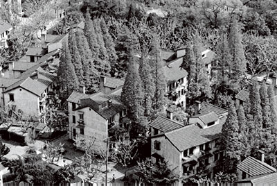

投资策划书
- 地区大环境分析
- 拟建业态研究
- 地质环境分析（选址分析）
项目建议书
- 市场分析与预测
- 初步进行建设方案的策划
- 初步估算拟建项目所需的建设投资和投产后运营期所需的流动资金
2
3
4
5
6
7
8
9
10
2
3
4
5
6
7
8
9
10

曹杨新村是上海解放后（1951年）为解决广大工人的住房难题，由陈毅市长决策，潘汉年副市长主持，上海市人民政府兴建的全市第一个工人新村，以“环境宽敞，房屋建筑简单朴素、实用美观、居住不宽不挤，附带建造必需的公共建筑”为设计原则。
曹杨一村位于曹杨新村的中心地带，囊括了枫桥路、梅岭北路、棠浦路、花溪路、兰溪路一带，于1952年5月竣工，至今仍完好地保留，开创了我国现代居住区规划和设计的先河，屡获“全国最佳街道”、“中国街道之星”等殊荣，还被列入“上海市第四批优秀历史建筑名单”，是上海市优秀历史建筑“老寿星”中房龄最小的。
曹杨新村是上海解放后（1951年）为解决广大工人的住房难题，由陈毅市长决策，潘汉年副市长主持，上海市人民政府兴建的全市第一个工人新村，以“环境宽敞，房屋建筑简单朴素、实用美观、居住不宽不挤，附带建造必需的公共建筑”为设计原则。
曹杨一村位于曹杨新村的中心地带，囊括了枫桥路、梅岭北路、棠浦路、花溪路、兰溪路一带，于1952年5月竣工，至今仍完好地保留，开创了我国现代居住区规划和设计的先河，屡获“全国最佳街道”、“中国街道之星”等殊荣，还被列入“上海市第四批优秀历史建筑名单”，是上海市优秀历史建筑“老寿星”中房龄最小的。
曹杨一村位于曹杨新村的中心地带，囊括了枫桥路、梅岭北路、棠浦路、花溪路、兰溪路一带，于1952年5月竣工，至今仍完好地保留，开创了我国现代居住区规划和设计的先河，屡获“全国最佳街道”、“中国街道之星”等殊荣，还被列入“上海市第四批优秀历史建筑名单”，是上海市优秀历史建筑“老寿星”中房龄最小的。
曹杨一村位于曹杨新村的中心地带，囊括了枫桥路、梅岭北路、棠浦路、花溪路、兰溪路一带，于1952年5月竣工，至今仍完好地保留，开创了我国现代居住区规划和设计的先河，屡获“全国最佳街道”、“中国街道之星”等殊荣，还被列入“上海市第四批优秀历史建筑名单”，是上海市优秀历史建筑“老寿星”中房龄最小的。